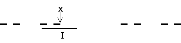

We consider only subsets of the line, though with the obvious modifications limit points can be defined in much more general settings.
A point x is a limit point of a set C if every interval centered on x contains at least one point of C, different from x.
So suppose x is any point of the Cantor set C. Then x cannot belong to any of the middle third intervals removed.
Suppose I is an interval centered on x.
I cannot be contained in any of the middle third intervals removed (else x would not be in C), yet it must intersect some of these intervals (the removed intervals account for all the length of the original interval).
Consequently, I must contain some endpoints of removed intervals.
Can I contain only one endpoint? No, because for each endpoint only one side is the interval removed. The side not removed at this stage is nibbled away by other removed intervals, some of whose endpoints must lie in I.
|  |
Return to Cantor set construction.